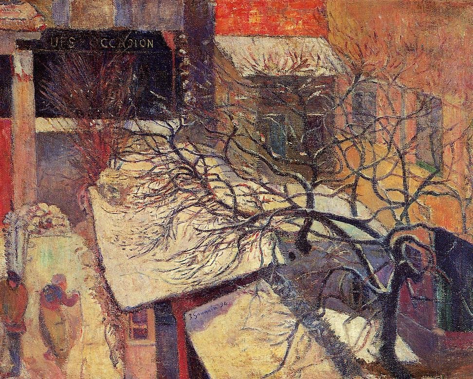
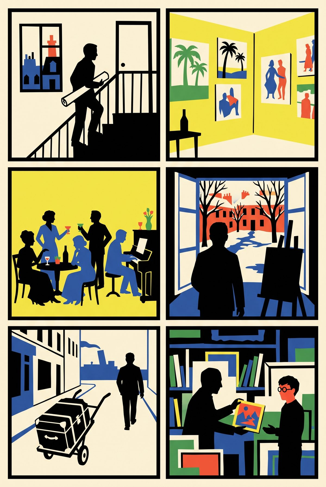
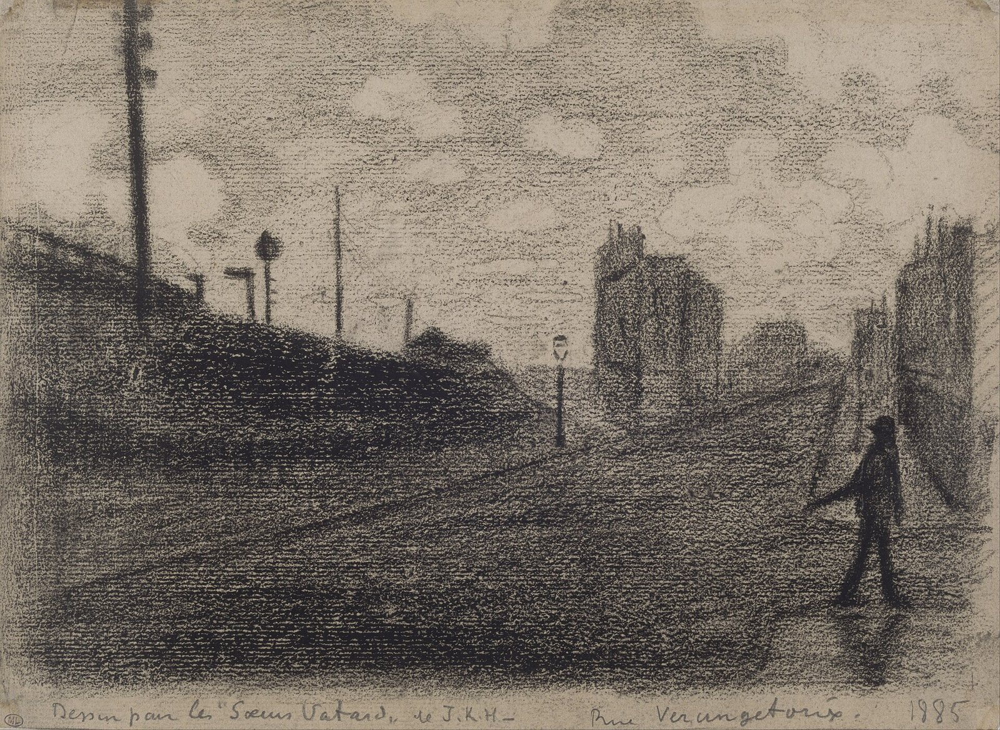

17:50 · three minutes · then 700 m along avenue du Maine to stop 2

Paul Gauguin, Paris in the Snow, 1894, painted from his window at 6 rue Vercingétorix. Van Gogh Museum, Amsterdam. Public domain.
Stand near the low numbers of rue Vercingétorix. Nothing from 1894 survives; the painting is the view from a top-floor window on this street.
▶ Listen · The yellow studio · 4 min
Paul Gauguin lived and worked at number 6 from January 1894 to July 1895, between his two stays in Tahiti. He painted the studio walls bright yellow and hung them with his Tahitian canvases, four Van Goghs and a Cézanne. Every Thursday he held an open evening: Degas now and then, Mallarmé, Strindberg, the composers Ravel and Delius, and the dealer Vollard. After a snowfall in late February he painted the courtyard from his window.
Why open a Matisse walk here? Vollard, from those Thursdays, is the dealer who in 1899 sold the penniless Matisse a small Cézanne he could not afford; he kept it thirty-seven years. Paul Signac drew this street in 1885 and in 1904 hosted Matisse at Saint-Tropez. And Matisse hung a Gauguin at home, next to a Rodin bust and a Van Gogh drawing.
Fun fact
Gauguin painted the Paris snow from a room painted yellow and hung with Tahiti. The composer of Boléro came to his parties.
Quiz · Which composer, famous for Boléro, came to Gauguin's Thursdays on this street?
Maurice Ravel.
The story in six panels

1January 1894. Paul Gauguin, back from Tahiti, rents a top-floor studio at number 6.
2He paints the walls bright yellow and hangs them with Tahiti, four Van Goghs and a Cézanne.
3Every Thursday, an open evening: Mallarmé, Strindberg, Ravel, Delius, and the dealer Vollard.
4February 1894. Snow. Gauguin puts his easel at the window and paints the courtyard.
5July 1895. He leaves for Tahiti for good. The house is gone; the street was rebuilt.
61899. Vollard sells the young Matisse a small Cézanne he cannot afford.
Drawn in paper-cut style with Gemini from our script; no real person is depicted.
More to look at

Paul Signac, Rue Vercingétorix, 1885, black crayon. Musée du Louvre. Public domain.